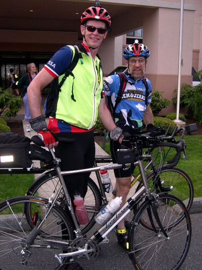
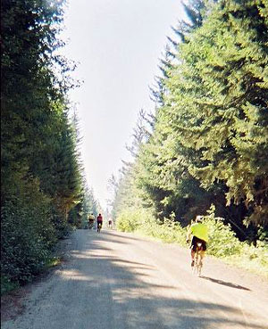
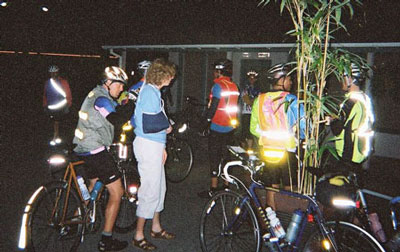
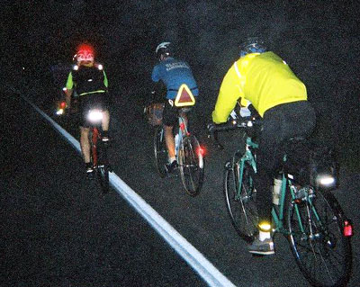
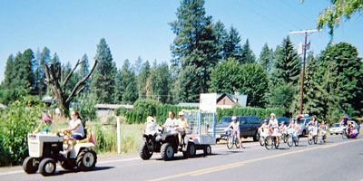
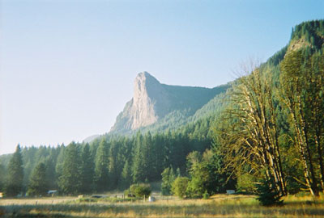
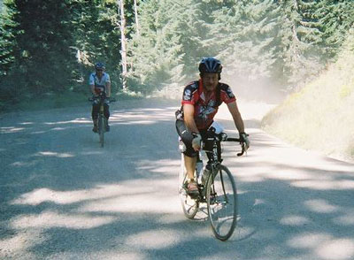
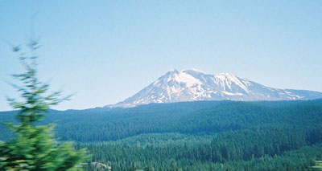

Volume 10 Issue 6 - September 2005
Ride Summary: Three Volcanoes 300k
Ride Summary: Summer 400k
Ride Report: Mark Roehrig's Cascade 1200
Three Volcano 300k Reports:
Ride Report: Len Lescosky's Spring 600k
NOTE: Please send any content for the newsletter to Patrick Gray
- SIR's next brevet is the 600k on September 17-18. Bill Dussler has picked an out-and-back course from Arlington to Winthrop. Please send him an e-mail if you're planning to participate.
- The final brevet of the season is Jan Heine's Mountain 100k on October 8th.
- SIR's annual meeting will be in October again this year. Check for updated information on the website.
Jan Heine
The 300 km brevet was another great success. With beautiful weather, a course that was flat except for three hills, and scenic, quiet back roads, Amy and Robin once again put on a classic, challenging event.Here are the statistics:
31 starters
30 finishers
1 DNF (km 120, I believe)
No incidents, accidents, penalties
Jan Heine
The 400k offered a challenging route from Enumclaw to Packwood, over White Pass to Yakima, then back to Enumclaw via Chinook Pass. Here are the statistics:
28 starters
24 finishers
4 DNFsOf the DNFs, one was due to a crash, but no serious injury, one due to a broken pedal, one to knee problems, and one hitched a ride on the last hill... all made it back fine.
Chris Ragsdale set a new record for this course, and visiting randonneuse Catherine Shenk from Colorado was only 10 minutes behind, probably the fastest SIR 400k woman's time ever.
A good day was had by most, it seems. Thank you, Don, for organizing the event. I wish I had been there!
Mark Roehrig
Day 1, 223 miles, 11,860 feet climbing
Monroe, wow the adrenalin is pumping as we arrived at the start line for the big ride! Sign in, get route sheets, pump up the tires, and pack the food and energy drinks for the day.
At 6 AM the gaggle of bike riders headed south to Carson. For a few miles we were all in one group until Ames Lake road which has a bit of a tilt to it. Then Duthie Hill road stretched it out further.
After winding our way through towns of Issaquah, Hobart, and the first control at Cumberland, through Enumclaw, we then turned south through Orting, Eatonville Control and on to Randle. The pace was fairly fast at 18 mph for the front group. But the grins on the rider's faces showed that the energy was high and not a care in the world, seemed like we could keep that up all day. Of course, that was not to be. By the time we left Randle the real climbing for the day began. After 140 miles of bike riding Elk Ridge Pass looms ahead and followed closely by Old Man Pass. Since this on Forest Service roads the grade is neither consistent nor straight. It just seems to follow the contours of the original terrain. Near the top of Elk Pass the roads consisted of a twisty, windy roadway with spectacular views of Mt St Helens.
As I neared the top of the pass I kept saying to myself that just on the other side there would be a fast decent. Fast decent...Fast decent...I think I can...I think I can...(Hmm sounds like a good name for a children's book :-)
 Mark Roehrig and Steve Barnes
Photo: UnknownCresting the pass I dropped to the areobars and rocketed down. Wheee...now this is what I live for! :-)
Near the top of Old Man Pass I spotted 4 Ospreys riding the thermals off in the valley. Fabulous! Now this is living.
Another cresting, another "switching to rocket mode, captain!"
This was a long 20 mile decent. This must be what heaven is like in rocket mode forever. :-)
By the time I got back to reality and starting to peddle again the night had settled in. I brought out the lights and cruised into Carson for the overnight stop.
Day 2 - 218 miles, 8340 feet climbing
Next morning, breakfast in the gym, reload the bike with the day's fuel, water, cue sheet and we are off to see the wizard...sorry got carried away, again.
We headed east into the sunrise along the mighty Columbia River on Highway 14. Three of us started out together on another glorious day in the saddle, weather cool but just right for biking. We would later want that cooler weather to return. As the route turn up highway 142 so did the grade of the road. The closer we got to the next Control the steeper the climb. After some time we got to the plateau and into Goldendale.
Leaving the Control point the route climbs up even more to Satus Pass. A 3100 foot climb in 14 miles, the higher we went the hotter it got. Both in energy output and air temperature. Another crest and I assumed the bullet configuration. One woman in our group said to me at the breakfast after the ride. "I know you; you're the guy that breaks the sound barrier on descents." Guilty as charged!
Toppenish Control and hot, hot, hot. The temperature hitting 98 degrees F. I headed off to Mattawa and Cue Sheet says "No Services for 53 miles". Good thing I filled all of my water bottles and Camelback, I used it all by the time I got to Vernita and water. It was getting very hot crossing the Rattlesnake Hills, but in the desert an oasis. and an angel of mercy appeared with cold drinks, cookies and potato chips, and most important a bit of shade. Now that's timing..
After we went up "Yes, up THAT Hill" it was a long ride into the control, but the hills were cooling down and the views were long distance.you can see for miles and miles.
Mattawa Control was great and the volunteers have sandwich stuff that really hit the spot after many calories burn this day.
Next stop Quincy, but to get to Quincy we had to travel along the Columbia River and VERY gusty winds. We got no relief as we climbed out of the canyon and up to the plateau. As Dave Read said, afterwards, that that was probably the toughest 40 miles that he had ever ridden. I think that I have to agree. Finally we could see the lights of Quincy, but they never seemed to get any closer. Why is it the last 5 miles are always the longest? :-) Between the wind gusts and the lights it made it a long slog.
Day 3 - 168 miles, 9140 feet climbing
Dave and I headed out at a luxurious time of 5 AM. It would be a lighter day for me at only 167 miles today instead of the 223 miles of Saturday. Dave was on the 1000 K and would turn off at Farmer. The weather was cool and overcast. It promised to be a much cooler day if not out right rainy. But as I recall there was a bit of rain, mostly drizzle. The roads were quiet and traveled through rolling hill after rolling hill always up, or so it seemed. This was in beautiful contrast to the heavy forested roads of the western side of the state.
Sagebrush Road took us through some more interesting country, the great lake area that scoured out rock from an ancient ice flow. It was another contrast in scenery from other parts of the ride that we had been through.
The Control at Farmer was interesting in the fact that it was practically the only building around, save for the outhouses in back.
I said good-bye to Dave and wished him luck on his ride back to Monroe through Stevens Pass. Then I turned on Mud Springs road and more uphill. I was looking forward to what the cue sheet promised to be a "Fast, Windy Decent". Oh BOY let me at 'm! But joy turned to disappointment as we started down. Twisty, wet with a very slick looking surface to the road. When we got to the bottom of the decent one of the Canadian riders remarked, "What a waste of a decent!" I actually had to use my BRAKES! :-(
Crossing the Columbia River again the road was fairly flat so I was cruising on the aerobars and picked up some speed on these "flats" as the road wound along side the river. The overcast skies kept the temperatures in the cool range. There were some head / cross winds but not as bad as last night. Keeping in the tuck position lessened the fight with the wind. At Brewster I stopped in a McDonalds since I saw a number of bicycles parked out side that said "Randonneurs Inside". Stoked the fires on some calories and we all headed out to the Control at Malott.
Leaving Malott the road turns up and connects to Highway 20. Loop Loop Pass after a long day in the saddle and 120 miles this pass is a long climb. Some rain and steep grades add more to make this difficult and challenging climb.
The decent was cool and fast. Being tired it was a little harder to enjoy. At the top, I stuffed some calories in and made the best speed as safely as possible down. When I hit Winthrop the road turned in the middle of town and I headed out to the overnight control at Mazama. As I rode the highway there was little traffic and not much movement. Being tired and nothing to distract me I start feeling a little light headed. The eyelids were heavy as well as my head. The road was very scenic and a very nice wide shoulder, light traffic and the promise of tomorrows ride for even more scenic vistas and mountain wildlife.
I pulled into Mazama Country Inn, got off the bike and I do not know which was holding which up. Was the bike holding me up or was I holding the bike up? But after a couple of plates full of pasta, rice and sauce I felt a whole lot better. Next a shower and to sleep, a full 6 hours of sleep and I was feeling great.
Day 4 - 165 miles, 7060 feet climbing
Next morning and a hearty breakfast, the biggest climb just down the road was waiting for me. So I mounted my trusty steed and headed off up the road towards the high point of the ride, literally, Washington Pass at 5860 Feet of Elevation. At 6 AM as I headed out again, the roads were quiet and all I could see and hear were trees rustling in the wind, the water of many streams cascading down the rocky falls and the call of many birds greeting this fine morning. This was all I could hear except for the little sound of my tires on the road. I saw no one in front or behind me. But it was a cool morning and with a good night sleep and fuel stores topped off, I was feeling really good.
I thoroughly enjoyed the solitude, quiet and scenic mountains. I rode for about a half an hour when I spotted three riders up ahead. I kept my pace and about twenty minutes later I caught up with them.
One guy was from Florida, and when I asked him how he trained for riding these hills he said that he used the bridges across the inter-coastal waterway. These bridges are fairly steep and I suppose if you ride back and forth across them you could get some elevation training.
Washington Pass took a long time but the view was worth it. Looking back over the edge of the roadway down to the road we had just climbed up was beautiful as well as "Wow, we climbed up THAT!" It looked even harder from this angle.
At the top of the pass we all stopped and put on all of the extra clothes that we carried for the cold decent that was next. The temperature at the top hit all of 44 degrees F. I asked the guy from Florida if he knew what the name of the next pass was and he said "Rainy Pass". I told him that they call it that for a reason.
It was a short climb up to Rainy Pass and sure enough it was raining fairly well at this point. So I battened down the hatches for the rain and wind that would be a fast soggy decent.
So I grabbed the areobars and headed down. It was a cold decent, at some point everything was shivering so bad that I didn't know if the bike had a flat or that the bike was so cold it was causing me to shake or that I was so cold that I was causing the bike to shake.
Then after miles of this shaking I saw an awning and a SIR Support point. Another oasis in the desert. But this one had hot chocolate, coffee, soup, and cookies. It was sure great to add some heat to the core body temperature after the cold wet ride.
Several riders came in as I drank my hot chocolate. With the bike not causing me to shake anymore I headed out again. By now the rain had stopped and it was the road and me once again. A few miles down the road a deer popped out of the underbrush about 300 yards ahead of me. Next two little fawns came out following mom across the road. I whistled and mom stopped and had ears turned toward me in radar fashion. The fawns stopped too and then turned back across the road and ran into the ditch just off the road. I was riding at about 25 mph and caught up to the two fawns that were jump / running on all fours legs like springs along side of me. The three of us ran like this for several hundred yards before the fawns made a fast right turn into the woods. It was quite a sight to see them run like that.
After the road construction, it was a short ride into Marblemount. The Texaco station was not there, apparently change into a Shell Station over night! :-) Fortunately I saw a couple of Rando bikes parked at the restaurant next door. They told me about the morphing gas station, so I lost no time in getting my card signed, buy a chocolate milk and one of the volunteers was there giving away some last minute sandwiches. Topping off the tank I headed out again.
This next section was a hard one for me. The ride was a long 66 miles from Marblemount to Granite Falls. The road was fairly flat with a roller or two in there for good measure. It was pretty going through the trees but it was getting to the end of the ride and I was looking for the end. I caught up to a tandem and rode with them for awhile. The guy on the back asked for my opinion on seats. He said his butt hurt and wanted to know if I had and information as to a better seat. Since my butt was hurting too I had no advice to offer. I told him that if he found an answer to that he would have the thanks of every Rando rider in the world.
Finally Granite Falls, I got something to eat and got the card signed. My cue sheet was folded so that only the route from Marblemount to Granite Falls was showing. I was thinking that I had forty miles left to go and that was depressing. But one of the other riders told me that "No, it was only 20 miles"; I turned my cue sheet over and sure enough it said 20 miles to Monroe. I told her that she had just made my day. We all started out together. As we rode we joked and commented on the ride. At one point the route turned and one person asked if this was the way. I said that it had to be because upon turning the road climbed a hill, and Randonneurs only route the finish through hills!
We turned into the parking lot that the hotel was and found a number of volunteers cheering us as we parked our bikes and entered the hotel to have the last sign-off for the ride.
The ride was the most spectacular ride I have ever done. Great people, both riders and volunteers. Good food. Wonderful route.
Day 1 - 233 miles, 11640 feet climbing
Day 2 - 218 miles, 8340 feet climbing
Day 3 - 168 miles, 9140 feet climbing
Day 4 - 165 miles, 7060 feet climbingAll told the climbing was 36210 feet in 784 miles!
Temperature range from 48 to 98 degrees F.
So would I do it again? Well ask me when my feet and butt stop hurting and I will probably say "YES". It is interesting to me that I had thought that it would be my tired muscles that hurt the most from this ride, as it turns out it is that man-machine interface that is the real problem.
Peter Beeson
Ah, a return to Packwood makes for a happy end of year brevet season ride. I had enjoyed the premier of the Pieper's new brevet course last year. I returned to Packwood with the wanderlust of the randonneur and the experience of last year whetting my appetite. This is my favorite brevet - one that I enjoy greatly.
Knowing that it's a slog to the ride start I drove out Friday afternoon, checked into Hotel Packwood and was greeted by the ever gracious and friendly Marilyn, proprietress of THE hotel in Packwood. While I unloaded the car I heard her explain to a Harley Rider, "Park your ride over there. That guy in the funny clothing, he gets to take his bike upstairs to his room." She chuckled and the big guy nodded o.k.
A quick greeting to a bunch of rando buddies-- Mark Thomas, Mike Richeson, Jon Muellner and gang and I was off for a quick dinner bite. Much to my friends’ amusement I enjoy an early-to-bed curfew before a big ride and was happily asleep at 7pm.
The alarm sounded early; we all gathered at an amazing coffee stand and chatted with friends. Mark Thomas kindly showed me his AAA card before the ride start - he was prepared.
Robin Pieper made a series of ride announcements - be safe, be safe, be safe. He emphasized the lack of cell coverage (I thought to myself Kent would be happy - I'm living proof of his axiom "cell phones make you weak").
And we were off - the freight train was made up of a bunch of riders and the pace was quickly at 22 mph - pulls up front ranged from the Herculean by my Boy Scout buddy Patrick Gray to my quick "on and off" preserve-my-energy pulls.
Before I knew it we had covered the first leg and started to climb - the freight train disbanded; Jan sprinted away and I found myself riding with the best of company: David on Big Red; Brian; Fred and Del. We all compared notes on Jan's rocket fueled ascent and settled into a nice rhyme to the first control. We rolled in and Amy Pieper greeted us warmly - we rolled out hollering back to Del that we'd soft pedal. Now anyone that knows Del knows that this is one tough, one very fast cyclist. Much to my surprise I didn't see him the rest of the day. At the finish I learned that Del has suffered 3+ flats during the ride which kept slowing him down. Even with that he still crossed the finish line moments after I did - and I had no mechanicals slowing me down - just a weary engine.
The Pieper's brevet has three climbs: Baby Shoe Pass (a gravel challenge); Big Tire Junction (a slog that goes forever) and then the final push up to Elk Summit (a long, long, slog).
 Riders ascending Baby Shoe pass
Photo: Patrick GrayClimb #1 - Babyshoe Pass
I enjoyed Baby Shoe - following Fred's rear wheel as he set the "line" on the ascent. We had a hearty cheer from Lola as we summited and enjoyed her water/gatorade hospitality. A quick descent and our old Fleche team reunited at Trout Lake. David, Fred, Brian and I rolled out of the Chevron control at Trout Lake with Brian on the lead.Climb #2: Big Tire Junction
Brian found his climbing legs after claiming that he had lost them the week of the Cascade 1200k. He set a ruthless, metronome-like pace up the climb to Big Tire Junction. I channeled my gym's spin instructors; meditated; attempted to focus on the joy of the searing sensation in my legs; the burn of my lungs and continue the climb at Brian's effortless 8+ mph pace. Brian lead, Fred immediately after and I was barely holding on to Fred's rear wheel. David would surge up on to me and then fade back.David and I enjoy a friendly competitive rivalry - and all season David has been the victor. As David faded back I wished him well under my breath and watched the gap widen between myself and Big Red. Ah I thought perhaps David is down for the count.
I was immediately shaken out of my meditative state by a primal scream from the rear - it echoed along the trees and reverberated off the road. Tarzan, King of the Apes, George of the Jungle, even Steven King would have been proud of the ferocity and power of the primal scream - it was the sound of rage and unbottled fury. It was David - and it fueled his Herculean sprint to close the gap; rejoin the gang and it had also recharged his legs - he climbed easily without effort.
Much like a knight of old I acknowledged that I had been bested again. After a long sigh (no energy in me for a primal scream) I retired from the field of battle and gradually faded off the back. It'll be another day before I attempt to vanquish David again.
Once resigned to my pace I enjoyed the ride to Northwoods.
Well, once I had thrown in the towel I resolved to enjoy myself at Northwoods. John Kramer greeted me warmly and in moments had the perfect sandwich; ice cold Diet Coke and chips on a plate in front of me. It was good visiting with John and his support was invaluable as I prepared for the third and final climb of the day.
Climb #3: Elk Summit
The cue sheet shows a 20+ mile climb to the top. My legs weary, my brain fogged and the sun heating the road all resulted in an abysmal 5mph pace. I thought to myself, "It's 20 miles straight up. I'll be here forever." As I plunged into the murk of profound depression I heard the sound of a car with some rowdy teens descending as I was ascending.I spun the pedals a little harder; tried to give off the pretense of a strong cyclist and the car full of guys hollered out, "Hey buddy, keep your eyes open." "Well," I thought to myself, "it's better than other things I’ve heard in the past."
Immediately after a big black truck with six beautiful topless "girls gone wild" whooped, hollered, shouted encouragement and proudly displayed the loveliest bodices known to a weary cyclist. My legs responded in kind and the speedometer shot up to double digits; the heart started pumping fresh blood and I thought to myself, "This tops Mark's PBP adventure of 'we could use a man that can ride PBP.'" Not only did my cadence improve; my spirits floated; I laughed and all of a sudden I was rolling into Amy Pieper's secret control - an oasis at the false summit. An ice cold Diet Coke and I was ready for the push to the finish.
Once at the top of Elk Summit it's a delightful high speed descent. Bob Brudvik would have been proud as his advice of, "No brakes, no brakes," guided me through the switchback descent.
I popped out of the park, calculated that it'd take an 18mph average to finish in 14 hours and set the cruise control for same.
One hour later I rolled into the finish and enjoyed the good cheers of Jan and my riding buddies - all freshly clean and enjoying pizza. Good riding buddy Peg greeted me at the finish; plated up some pizza and I gave a sigh of contentment - another ride under the belt and a beautiful one at that.
The Piepers’ 3 Volcanoes 300k is challenging; unbelievably scenic and they and their volunteers provided world class support. Bravo! This is a brevet that I would enjoy year after year.
David Huelsbeck
The 3 Volcanoes 300 got started early, earlier for some than for others. When I popped out of bed, or was shoved out by Cate who heard the alarm first, Saturday August 6th was only one and a half hours old. This left just enough time to pull on my riding clothes, gather my gear, and get down to the drive before Jan Heine arrived just after 2:00 AM. It was early but sleeping, if only briefly, in my own bed and spending a couple of hours talking about bikes and not about bikes with Jan was a pleasant way to warm up to what was sure to be a challenging ride.
 Amy Pieper shoulders the burden of last-minute sign-ins
Photo: Patrick GrayI'd done the inaugural 3V300 last year. Breakfast in the big room at the Inn last year was nice but having the coffee shop open early was a special treat. We signed in inside, fueled up, and collected out front for the pre-ride briefing. And what a briefing it was. In a nutshell, Robin explained that there would be no cell phone service for virtually the entire ride and that should anything happen we should expect emergency response time measured in hours. He enumerated the various hazards that he was aware of and suggested that we take it easy and enjoy the ride. Whatever we did, we were strongly cautioned not to try to make up time on the 3-mile unpaved descent of Baby Shoe Pass, nor to bomb most of the other descents as the road surfaces weren't entirely predictable. With that admonishment, we were off into the darkness and fog.
Roughly a third of the 30 starters - one would start later - jumped ahead and went zipping into the chilly predawn fog along Highway 12. With no wind, a flat road, a good surface, and eager riders the pace quickly settled in around 20 mph. The rhythm was disturbed only once when some elk showed interest in joining the paceline. It was a brisk pace for the start of such a long and challenging ride, but with so many riders in the paceline we each arrived at Randle with no more than a couple brief stints on the front.
From Randle to the park entrance the pace slackened as we all readied for the climbing. I remember telling Patrick Gray that I didn't expect to see much more of Jan, Del, and some of the others once the climbing started. As it turned out, Jan did leave us behind rather quickly, but I was surprised to find myself hanging in with Del, Peter, Fred, and Brian. The five of us reached the first control together, but we left without Del who paused to fiddle with his bike. We left expecting Del to catch us shortly but I never saw him again.
The first climb into the park is only a few miles at 5-6%. From there to the control, and for quite some way beyond, the road just meanders on its route to the foot of Baby Shoe Pass. The scenery along this section is not the most spectacular of the ride, but it is very pretty. At this point were all feeling fresh and no one was working very hard, so we had plenty of opportunity to gawk and talk.
Unlike last year, we all elected to stop and fill bottles at the campground before Baby Shoe. Water had been scarce at the first control this year, so none of us had topped off there. Also, a couple of us remembered having run low last year and were determined not to do so again. The pump water was full-bodied as water goes, but it was wet.
At the edge of the gravel I let the rest of the group go while I stopped and took a good bit of air out of my 26x1.25 tires. I'd done this last year after about 500 meters of gravel and it seemed worth the time to do again.
 Rolling along in the early-morning
Photo: Patrick GrayAs it turned out, there was not nearly as much gravel on the road as there had been last year. It was mostly rough hard-pack. Last year we'd drifted around without much directional control. This year we steered around hunting for a smoother line.
Aided by the improved traction of my soft fat tires I caught Brian about half way up but couldn't quite bring back Peter before the summit. I kept catching glimpses of his hi-vis vest above me, but I couldn't close the gap.
On the descent, the soft tires felt great. I wasn't crazy enough to tuck, but as long as I stayed out of the worst of the washboard, 20+mph felt quite comfortable and controlled. I quickly picked up Peter and finally Fred. Peter's overly active sense of self-preservation was probably holding him back. Then again, I sort of remembered Robin saying something about not making up time on the descents.
We all arrived at the edge of the asphalt more or less together. The others waited courteously while I reinflated both tires. At this point I was eager to get on with some real descending, but it was not to be, after the briefest descent, the asphalt turns up again. It seemed to take forever for the road to roll over and turn down towards Trout Lake.
When it finally did turn down it was chin on the bars, hands on the stem, no brakes all the way to the first stop sign just outside of Trout Lake. There was nothing to impede even Peter's finely tuned sense of self-preservation. We were at the gas station in a flash.
Last year I'd made the mistake of trying to use the café as a control. I had been surprised to find Jan sitting there patiently awaiting his order. The waitress was not accustomed to that many customers at one time, and things backed up. For Jan, last year's 3V300 had been his first ride in six weeks, so he was taking it easy. This year there was no sign of Jan by the time we reached Trout Lake. We watered up at the gas station and were quickly on our way, each on our own schedule.
As I rolled out, the residents were beginning to line the streets for some sort of parade.
 We weren't the only bikers in Trout Lake-- their River Days parade was under way
Photo: Patrick GrayBetween Trout Lake and the beginning of the climb, which really should have a name but doesn't seem to, we grouped up again. It looked like the four of us would stay together after all.
I was bobbing off the back of the group but I wasn't quite dropped when I saw the sign announcing the sno-park in one-quarter mile. Figuring that the sno-parks are usually at the summit I gave it all I had to hook back on before the "summit". As I caught on we rounded a bend and it was clear that the top was nowhere near. I continued the fight to stay on.
As it turned out the "summit" was a ridge that started at the Big Tire junction. The road along the ridge rolled. Every time the descent seemed to be getting started, it would end in another climb. The quick descents and slow climbs gave the impression that we were constantly climbing, though my altimeter showed that we were just bouncing up and down a couple of hundred feet at a time. We joked that we had ridden into some kind of M. C. Escher landscape where we were always climbing up to the bottom of the next climb. As consolation, the weather was great; there was a nice breeze, spectacular views, and good company. Everyone was in good spirits.
When we turned on to FR-90 Peter and I were lagging behind a little and we started to hit a noticeable headwind. I pushed to close the gap to Brian and Fred, hoping to get some relief from the wind. As it worked out, we finally got some more sustained down hills, allowing me to employ my gravitational gifts and catch back on. Somewhere in all of this we lost Peter.
We stopped at the Lower Falls campground to water up. The water turned out to be well off the road. Figuring that Peter must be just behind us and given that it wasn't far to the Northwoods control, I headed out quickly, hoping to intercept Peter should he bypass the water stop.
For a couple of miles, I was able to sit up and take my hands off the bars, stretch and enjoy the mid-day beauty of this place. We were well down into the forest at this point. While the views were not spectacular, the surroundings were pleasant and the trees were moderating the sun and wind. By western Washington standards, it was a hot day, but down here in the woods with the stream rushing alongside it was perfect riding weather.
Brian and Fred picked me up again in the middle of the second significant unpaved section. Baby Shoe had about 9 miles of unpaved road, 6 up and 3 down. We'd crossed a few brief washouts here and there, but this stretch was a mile or so long.
I was looking for tracks indicating that Peter might have passed us when Brian and Fred rolled up. They said that Peter pulled into the water stop as they were pulling out. We didn't really discuss it but there didn't seem to be any plan to regroup. We just continued at about the same pace we'd been making all day.
We did a bit more climbing before dropping down again to Northwoods. I didn't remember that much of this section of the ride from last year. It was all new again. The descent down to Northwoods was especially fun. It's not steep enough to be really fast but if I tucked I could get it above 30 or slow to the lower-20s by sitting up. There were lots of sweeping turns where we experimented with different lines. This was probably contrary to what Robin cautioned us about in the pre-ride briefing, but it was a lot of fun.
At one point I was leading the charge into a relatively short and tight S-curve, just at the foot of the descent where we were still carrying some speed. I chose the same line as the oncoming motorcyclist who was taking the mirror image turns in the opposite direction. We came into view of each other just as we cleared the outside curves and enter the connecting section of the S. We were not in each other's path but neither of us felt like passing elbow-to-elbow either. As we both diverged from the centerline he gunned the throttle for emphasis. Fred and Brian had seen the whole thing from a little way back and came up to rib me about it.
By the time we reached the Northwoods control, it was getting hot and I was beginning to feel the effects of the day's exertions. I knew from last year that the crux of this ride lay just ahead. The foot of the Elk Summit climb was about 6 miles of 6% followed by a long rolling false summit and another 4 miles of 5%. I was still going OK, but I knew that I'd be suffering for most of an hour coming out of Northwoods. Taking it easy would only mean suffering a little longer.
I was surprised to hear that Jan had gone through just an hour ahead of us. Jan had a rough go of it last year and seemed to be on a mission this year. Being only an hour behind him at this stage was somewhat encouraging.
While Fred and Brian showed some interest in the sandwiches on offer, I just filled my bottles from the taps by the laundry and forged on. I didn't notice until my bottle of drink mix was almost full that the tap I was using was hot water. I filled my plain water bottle from the cold tap but my drink mix was tepid. It would be that way in a few miles anyway, but it was still sort of discouraging.
On the bright side, a big advantage of my DIY drink mix is that I can tailor it to the conditions that I expect. I'd anticipated that this section would be hot, so I'd made a bag with no protein and no sweeteners or other flavors. It was straight maltodextrin and electrolytes. The maltodextrin doesn't affect the taste of the water at all, so I had a bottle of vaguely salty, tepid water. Not real tasty but not too objectionable to drink either. I had a couple of Hammer Gels if I got really desperate.
I rolled out ahead of the others but I took it pretty easy up to the climb. A car pulled up along side of me and asked if I could help them. I hoped for their sake that the solution to their problem involved very small metric Allen wrenches. As it turned out they wanted directions to Mt. St. Helens. I told them to just keep going the way they were and to follow the signs.
Once the climbing started in earnest, I switched my cyclometer to lap time and started a new "lap". I knew that I'd be climbing for an hour, more or less, but I didn't really need to see how slow I was actually going. I tried to hold my heart rate at 150 bpm, but 145 turned out to be more natural. My legs were nearly cooked.
 Tower Rock looms high above the road south of Randle
Photo: Patrick GrayIt was seriously hot on this climb and we were climbing the sunny side of the road. My thermometer was reading in the mid-90s, but it seemed hotter. I tried taking off my Headsweat. I tried putting it back on and squirting water in my helmet. I was just about as hot either way. There was a light breeze from behind, but it was little relief and no help.
Brian rolled up on me in a hurry and kept rolling on by. I suggested that he could help me out by dropping back to give me a push. He said that Fred was right behind him and that Fred would be sure to help me out when he arrived.
Not long after Brian disappeared around the next bend, I received a most unusual indication of our relative positions on the climb. I heard excited shouting or cheering from just up the road. A minute later an old pickup truck came into view headed down the slope. The driver was half hanging out of the window, shouting, slapping the door, and gesturing towards the vehicle behind him.
The following vehicle turned out to be one of the older-style SUVs with, appropriately enough, the top removed. There were three or four people standing up in the back screaming and waving their arms above their heads. As they got closer I realized that the "people" in the back were in fact young women, and like their vehicle, topless. How was it possible that this group was not tied up to the log boom on Lake Washington cheering on the hydros?
Under different circumstances I'm sure that I would have appreciated this spectacle more. As it was, or as I was, it was just a strange momentary interruption in what seemed like an endless climb. Just as they passed out of sight behind me, I could hear another cheer go up. Fred. A minute or two later I could hear a more distant flurry of screams. Peter. At least I'd have some witnesses to attest that I had not hallucinated the whole thing.
Ordinarily it's mighty tough to trump a truckload of topless young women, but by the time I reached Amy Pieper's secret control at the overlook, Amy and her cooler full of cold beverages was a much more welcome sight.
Brian had already come and gone. I was running so low that I elected to sit down long enough to put down a cold Coke before heading out again. I expected Fred and/or Peter to arrive while I was at the control but I ended up rolling out alone. Amy attempted to cheer me on with the information that I had only two miles to go to the summit. I knew this wasn't true, but I wasn't about to argue with the person who had just brought me back from the dead for the second time in as many months.
In fact, I was just two miles from the start of the final 4 to 5-mile climb to the summit. This is an easier climb than the lower slope. Also, it was quite a bit cooler and breezier on the upper slope. Between the Coke, the brief rest, the lesser climb, and the milder temperature I was feeling much better. Knowing that this last 4 miles was essentially the last of the climbing may have contributed to my improved spirits.
The stretch from Elk Summit to the Park entrance south of Randle has been variously described as 20 miles of climbing or descending, depending on the direction of travel. This isn't quite accurate. It's only a few thousand feet of elevation change. If it were 20 miles up or down it would be a very shallow grade. In fact, it's about 10 to 12 miles of up or down split between the somewhat longer and steeper upper slope and the somewhat shorter and shallower lower slope. There is a long and slightly rolling, more or less, flat section in between. It's roughly the reverse of the profile between Northwoods and Elk Summit, which is longer and steeper on the lower slope.
In any case, the first descent was fast, fun, and refreshing. Though, by this time I'd begun to heed Robin's words of caution. I was a bit fatigued and the lighting was becoming uneven as the sun dropped lower. Rather than tucking, I sat up and let the wind moderate my speed.
The descent left me with plenty of energy to keep the pace up through the flat. The final descent came quickly but ended too soon. After so much time in the beauty of the Park, the flat and relatively developed valley floor looked sadly plain in the late afternoon light.
As I turned towards Packwood at Randle I saw the highway sign marking the distance as 15 miles. It was finally time to ponder my finishing time. Some quick math led me to the conclusion that I could still slip in under 13 hours if I could just hold an average speed of 30 mph for the next 30 minutes or so. I was feeling pretty good and there was a decent tail wind, but I was certain that the 13-hour mark would be safe from attack by me.
Along the way I slowed down and eventually stopped briefly to fish a Hammer Gel out of my bar bag. Just as I found it, I heard a voice from behind ask if I was OK. It turned out to be Brian. It seems that Brian had stopped for water in Randle and had seen me go past. I'd been making pretty good time since Randle; Brian must have been going very well to catch me.
We traded pulls the rest of the way into Packwood. If it hadn't been for Brian, I might have overshot the left turn to the Inn. For whatever reason, it looked different than what I remembered. We were greeted with shouts and applause from the small welcoming committee of volunteers, spouses, and non-SIR Inn guests waiting on the front porch. Jan was already showered, changed, and looking very relaxed.
After some discussion Jan and I decided to spend the night and drive back in the early morning. This left us the whole evening to lounge around on the porch eating pizza, drinking frosty beverages and greeting the rest of the riders. By the time I finally headed to bed, there were only a few riders still out and everyone seemed destined to finish safely inside the time limit.
As 300s go, the 3 Volcanoes route is tough. Though coming as it does at the height of the season, most riders come to it better prepared than most do to the Spring 300s. On the basis of overall riding quality, I think that it may well be the best route that I have ridden. I generally prefer the novelty of riding new routes, but this is one classic route that I wouldn't mind riding for years to come.
Duane Wright
I hadn't planned to ride the Three Volcanoes 300k. Or, phrased more accurately, I had planned to NOT ride it. Just looking at the profile gave me a nose bleed.
Several days before the actual event my co-worker Sara was telling me of how well her RAMROD had gone, the week before. For some unexplained reason I impulsively suggested she might enjoy the Three Volcanoes 300k ride. She misunderstood, taking my suggestion to be an invitation and accepted. Darn! Now I had to ride the thing (or try to).
The organizers, Amy and Robin Pieper, had arranged for a coffee shop, in the heart of Packwood, to be open prior to the 05:00 start. It was a great chance to register, get a pastry and beverage, and catch up with old friends, all under one roof.
31 riders were present for the start, including one woman, Sara. (Didn't there used to be more women on these rides?) Sara had spent a fair bit of time, in the several days leading up to the ride, collecting and installing necessary accouterments to help her bike pass the rando fashion inspection. We set out in the dark, westbound on Highway 12, toward Randle. A sizeable portion of riders stayed together, all of the way to Randle.
There the route turned south, destined for the Gifford Pinchot National Forest. Just several miles after leaving Highway 12 (and Randle) the route climbed and the clump of riders broke up. Not far into the ride was the first control, handled by ever-smiling Amy. By this point Sara had developed a bit of nervousness about this randonneuring stuff, but Amy did a good job of offering encouragement.
After leaving, Sara and I had not gone far from the control when I found someone's control card. I scooped it up and we continued. Not too much later the owner came heading back. He was relieved that I had found it and that he was able to avoid a mile or so of backtracking. The course was rolling, the sun was out, and the air was heating up. I found it very disconcerting to have removed all excess layers by 07:30!
After a water stop, at a campground, the first (of three) climbs began. While each climb was to have its own unique personality, this climb had the most tangible feature - 13 miles of gravel, straddling the summit. The mention of gravel had struck fear into the hearts of men (and woman). Most of the riders had wrestled with the issue of wider tires. Heck, even I had wrestled with the issue. Not that I'd done anything about it, but worrying really should count for something.
At the start line various riders had bragged about their millimeters and knobbiness. The rest of us could only engage in tire width envy. Size matters, the endowed ones gloated. I assumed the gravel part would truly suck but for the other 93% of the ride I would have the last laugh. Well, that was my strategy, anyway, and it looked good on paper.
 Mike Richeson and Peter McKay Riding up the Gravel of Baby Shoe Pass
Photo: Patrick GrayThe gravel could have been much worse, but gravel is gravel. While patiently swimming through the stuff, I had lusty thoughts of the comforts of chip seal.
Most drivers were polite, but a few jerks saw this as an excellent opportunity to exhibit their true nature. We breathed a fair bit of dust.
Eventually we crested the climb. The stretch of gravel was not over, however. Now there was something more essential than wide tires - front suspension (I hadn't brought that either). In time the gravel came to a merciful conclusion. Sara and I commiserated. Sara made a vow - if she ever got out of this ride, she would abstain from gravel for a long time.
We now enjoyed a long coast (with a bit of pedaling thrown in, for variety) to the small village of Trout Lake. A combination service station, café and espresso stand awaited us for a control. Now it was hot, no denying it. It was NOT Gold Rush hot, but at least hot-enough-to-make-you-sticky-and-uncomfortable hot.
Sara said she wasn't feeling good. She was leaning strongly toward quitting. I thought this was nervousness-induced discomfort. I encouraged her to not give up just yet. We sat under an awning with several other riders. The cue sheet had the next control at only 47 miles (and one climb) away. I pointed out to Sara that this control (Northwoods) would be staffed (= a possibility of a ride back to Packwood). I swear - I truly believed this.
We set out, in the heat, toward another big climb. We worked our way up the grade, in the midday sun, with the large, mud-capped Mt. Adams looming off to our right. Sara was very quiet. I wondered if this meant she had gotten over feeling sick and was so totally engrossed in the natural splendor of the surroundings that she was speechless. I didn't wonder for long. We came upon Flat Top Sno-Park (with its view of the Flat Top rock formation in the distance). Sara announced this was the end of the line for her, and that if I could talk a support person into coming back to retrieve her, that would be all the better. If not, she intended to spend the rest of her life in the shade of the shelter at the sno-park. I pondered some counter argument, thinking if I could just get her to go a little further, she'd be over the crest and enjoying a relatively cooler, more effortless descent. Alas, Sara was resolute. I said I'd do my best.
As I biked on, with this new situation on my mind, I calculated the sno-park was 38 miles from the next control. I wasn't sure if Robin or Amy would really want to do an extra 76 mile jaunt (but I tried to remain optimistic).
As usually happens, when one has dropped out, the crest was right around the corner. Now the course turned to rollers. I passed Josh Martin, taking a shade break. Yes, it was hot. I studied my water bottle situation: not much water; lots of miles to next control. I studied the cue sheet: water at park, coming up! I downed water bottles.
 Mt. Adams From the Top of Baby Shoe Pass
Photo: Patrick GrayI never saw the park. Now I was running on empty water bottles, with 14 miles to go. It was my turn to start to feel queasy. I was happy to finally reach the control at Northwoods. To my surprised, it was staffed by John Kramer. I feared this did not bode well for Sara's rescue. John lived somewhere down in these parts and probably was NOT intending to go to Packwood at all.
John made me a sandwich while I spoke of Sara's plight. He speculated on her chances of coasting back to Trout Lake, then finding a room or hitching a ride back to Packwood.
I left the control, and approached the Elk Summit climb, not knowing if Sara would be rescued. After several miles, before the actual climb, my queasiness had blossomed into a more full-blown feeling of being sick. I hadn't had long to savor the experience when I heard several female voices calling out to me. This happens all the time, of course, so rather than look back to investigate I maintained my focus on enjoying the sick feeling I was experiencing.
Then one of the female voices yelled "Hey! Turn around!" I looked in my mirror and saw a slowly approaching pick up truck. There appeared to be several young women standing up, in the back. They appeared to have nude torsos. That was a lot to be certain of, from an eyeglass mirror, so I awaited verification. As the vehicle passed me, there were several people in the cab, four young women, bare-breasted, standing in the back yelling and waving, and three guys sitting in the very back, also waving. One of t he guys gave me the thumbs up sign. My face broke into a smile and I waved back. The truck slowly pulled away. I was kind of hoping the group would escort me to the summit. None-the-less, the event was a morale boost - for the next several miles I forgot all about feeling sick. I guess I thought about other things.
This was probably not the sort of story I would be able to talk about. I recalled the bison sightings on the Ellensburg 400k in the spring. There were accusations of hallucinations. Who would believe my story?
Eventually life was back to business as usual - climbing, and feeling sick. It got to be tough going. So tough, in fact, that it seemed obvious that now was the time to pull over and oil the pivots on the sticking front derailleur that had been bugging me all day.
I then struggled on, though I stopped at least two more times just to walk. It was a bit frustrating to see time slipping away, but I wasn't feeling strong and that was that. I had hoped to crest the summit, and make the descent in the daylight, but that was not going to be.
Eventually I reached the false summit. The temperature was still warm, though the brief descent was chilling. I consciously did not stop to put on a layer, hoping instead to drop my core temperature a bit.
The road leveled out and there was a wonderful glimpse of Mt. St. Helens, pink in the setting sun. Perhaps there was even a touch of steam, near the summit, to add an impressionistic appearance to the scene. I stopped to admire it all while putting on a layer. Then I biked around the bend and there was Amy, with a cheery smile and ice water. This stop, and the by now slightly cooler temperatures, gave me enough of a boost to complete the ascent to Elk Summit.
The long descent proved to be tedious. My lights weren't strong enough to allow safety at a reasonable speed, so I had to ride the brakes. The pavement was occasionally dicey.
At one point I came upon a car, parked on the far side of the road, with its brights on. I had to go very slowly, all of the way down to the car (it was a long section of straight road). When I finally passed it, a slightly timid voice called out "Get off the road, faggot!" I suspect the young guy was trying to impress his equally silly buddies. I continued on, secure in my tights.
I wondered how Sara was doing, and where she was. And I wondered what I would do if she was destined to become a resident of Trout Lake. As I'd gotten a ride to the start with her, it would mean that I would become a resident of Packwood. What job opportunities might be found there? What skills did I have to offer? I could pedal a bicycle. I could detect bare breasts. Probably I'd need to consider some other career.
Josh Martin caught up to me. We talked a bit, and then he pulled away. He had good lights! Now I was bringing up the rear, a comfortable position.
A short while later, where the route met Highway 12, there was Josh. It was great to have someone to ride back to Packwood with! There was a bit more traffic now, but a good shoulder.
We finished with 20 minutes to spare. Robin, Amy, and a very perky Jon Muellner greeted us at the Packwood Hotel Annex. There was a lifetime supply of pizza and I did my best to attack it. Mention was made of the "Girls Behaving Badly." Apparently others had had a similar experience to mine. Robin pointed out that it was all included in the small $15 registration fee.
Amy made my day by telling me Sara had been rescued. John Kramer had found her at the sno-park, driven her north, and Lola Jacobson had travelled south for the hand-off.
When I spoke with Sara, later, she mentioned that the wait, and each of the rides, had involved vomiting. I tried to cheer her up by pointing out that even vomiting can be funny in retrospect. The next weekend Sara rode the Torture Ten Thousand, so perhaps the portion of the 300k that she'd ridden was just the right warm-up. And hopefully she'll investigate randonneuring again sometime soon.
Len Lescosky
The benefit of a Seattle start was I could ride to the start. No need to drive and worry about forgetting a shoe. And the start was near my office, a ride I can do with my eyes closed. But it was really nice at 3:30am with almost no traffic. I found the group assembling when I arrived at the start near the ferry dock. It was nice chatting but I could have slept another half hour and made the start. We left at 5:00, east on Jackson, south to the I-90 trail. The I-90 bridge is always a mess for me when I'm with other riders. I fell off the back as usual. The first part of the ride was similar to the 200k, with parts in reverse. It felt good to be on a familiar road when I was alone.
The road into Rainier was nice too, I was moving along real well. I wanted to stop at Elbe and get a burger at the hamburger stand. There must have been 50 motorcycle guys there, what better recommendation? I stopped to take a picture or two and kept going. I thought the turn at Ashford would be the hardest part of the ride. It was the highest climb, right? The grade was decent, not terrible as I expected, and the descent was supreme. Perfect road, twisty, high speed, wow.
The Packwood control was interesting. One of the store people reminded me eight or ten times that earlier riders had purchased several gallons of water and left plenty for those who followed. I'm still not sure if she was annoyed or being helpful. I grabbed myself a few chicken strips from the hot food bar and a V-8 for lunch and refilled my bottles with Coke and Gatorade. Not mixed, yet.
Packwood to Morton started out as a grind. I was struggling to keep up 20km/h on the downhill into the wind. The uphills felt better because the wind wasn't blowing. Not much else to say about that stretch of ride. At the Morton control I had an ice cream bar and talked to a Morton resident. He was intrigued by our ride today. He's doing STP in a couple weeks, had abandoned last year because something weird happened to his bike but now he's got a new one. He was a really friendly guy and pointed out the direction to go. I could have used him later in Port Gamble.
In Centralia another helpful person at the Chevron pointed out the water left behind. For the length of this ride I had surprisingly few bike-car interactions. No yelling, no horn blowing. I was almost hit twice though by drivers turning right in front of me. Centralia was the first, after leaving the control, still in the bike lane, at the next big intersection. I have four rear lights, how many do I need?
I came to my senses in the next stretch. I'd been planning to ride all the way through, and I was making good time at less than five hours per 100 km. I was starting to feel that 3am wake up today, and realized that a little rest could be a good thing. Trent and Melinda had hot noodles and coffee and a nice dog. They gave me a room key and a promise to wake me up in two hours.
Somehow I woke up myself at 1:28 and next thing I heard was banging at my door. It took me 15 minutes to dress myself and stumble to the control room for breakfast. Riders were coming in, with Paul taking the key to my just-vacated room. I was on the road at 2:00, and feeling well rested and great. It was cold but I had on three layers of wool so I was just about the right temperature, but still a little bit cold. When I saw the sign for a 14% downgrade I knew I needed my rain jacket too. It was just barely getting light out so a fast descent was possible without concern for wildlife collision.
I arrived at the Potlatch control before it opened. From a distance I saw a large, shiny gold thing moving around, like someone wearing a gold lamé bathrobe. What kind of weirdness was I about to encounter? Turns out a couple of randonneurs arrived early and really wanted to go into the store, so they were camped out with their emergency blankets. I told them I thought Elvis was here, another rider commented they looked like rando burritos. The store had nothing I needed so I answered my control question and headed out alone around Hood Canal. First thing out a dog almost got me. I always can out sprint them, but I was cold and putting on my wool gloves when the attack started. I was unknowingly pushing down on my brake cable which was engaging my rear brake. As I struggled to accelerate I thought he must have the rear wheel in his mouth it was so hard to pedal.
I hadn't packed my handlebar bag well and endured a lot of rattling because of the road surface on the south side of the canal. That was OK though as I remembered how lovely this road was from the 300. I think that future route sheets could note that there is at least one 24 hour grocery store in Belfair, so camping out at Potlatch shouldn't be necessary. Making the turn to the north shore, the road is smooth and I could pick up my pace and silence the ride at the same time. The control at the boat launch was a nice stop.
I enjoyed the Tahuya Hills. The ups were just enough grade and distance for appropriate suffering to earn the beautiful downhills. I stopped a couple times to take pictures of the hills, trees, and flowers. It sure is wildflower season in Washington. One thing that struck me was the older forest clearcuts and how full of foxglove they are.
The turn to Seabeck was something else. I saw a little uphill, then as I came around the corner it looked like a wall. When I finally made the descent I couldn't have been more pleased for the rest. I stopped abruptly at the bottom, right before town, to take a few pictures of an eagle fishing. Had a delicious biscuit and gravy breakfast at the control and with some solid food my stomach finally felt good. I'd been a bit queasy since Centralia. My habit is to combine Gatorade dregs in my spare water bottle, and I think I hit on just the right disgusting combination of three kinds of Coke and five Gatorades to do me in.
The Anderson Hill climb was outrageous. Steep, no shoulder, plenty of cars. But the cars gave me plenty of room, I'm pleased to say. But I was beginning to have enough. All the great riding with very few cars so far ruined me for the return to high volume traffic. Then the rain hit, right about when I was at Frontier road. I don't mind the rain much, but it took me a couple of stops to adjust myself. First my rain jacket, then my shoe covers, then change my glasses, then turn on my lights. Once I was all wrapped up and on the way to Port Gamble I felt OK.
Port Gamble was where I almost lost it. I found the control OK, the rain was pouring, the jokesters on the store porch thought I should have considered the weather before I left on my ride. I told them it wasn't raining when I left home and that was even funnier to them. So I headed out, turning left on 104-S as the directions indicated. About 1km down the road the sign said 104-E. Uh-oh, what had I done wrong? I circled back to make sure I was going in the right direction, passed through Port Gamble until I saw the sign said 104-W. Now I was confused and headed back to ask for directions. I forgot to mention that I was surprised at the way the whole town was dressed up for the Renaissance Festival. Anyway, The King's Shopkeeper didn't know anything about Port Gamble Road but suggested that the way to go to Bainbridge Island is the way I came from. Well that turned out to be the wrong direction. Luckily for me, Mark Thomas helped me out by flagging me down as he passed me going in the wrong direction.
I was back on course, then a couple riders, Dave and Charlie, picked me up and we motored to the ferry. I really appreciated their help for those last miles. I finished at 3:58, just under 35 hours. I hoped for a 36 hour ride with no sleep, so I'm pleased.
A week later I mailed in my registration form for the 1000k.
Pictures from Len's 600k can be found here: http://homepage.mac.com/lenlescosky/PhotoAlbum37.html
| Date | Distance | Organizer | Route |
|---|---|---|---|
| September 17-18 | 600 km | BILL DUSSLER | Proposed route will be a North Cascades out and back from Arlington |
| October 8 | Mountain 100 km Populaire | JAN HEINE | Similar route to 2004, but with changes to avoid Issaquah traffic. |
Paul Johnson, Peg Winczewski, Peter McKay, Amy Pieper, Mark Thomas, Terry Zmrhal, Jon Muellner, Peter Beeson, Wayne Methner
Membership Fee:
$10 - full membership w/e-mail newsletter or
$15 - full membership w/printed newsletter.
Membership Address:
c/o Terry Zmrhal
9531 112th Ave NE
Kirkland, WA 98033
425-828-7818